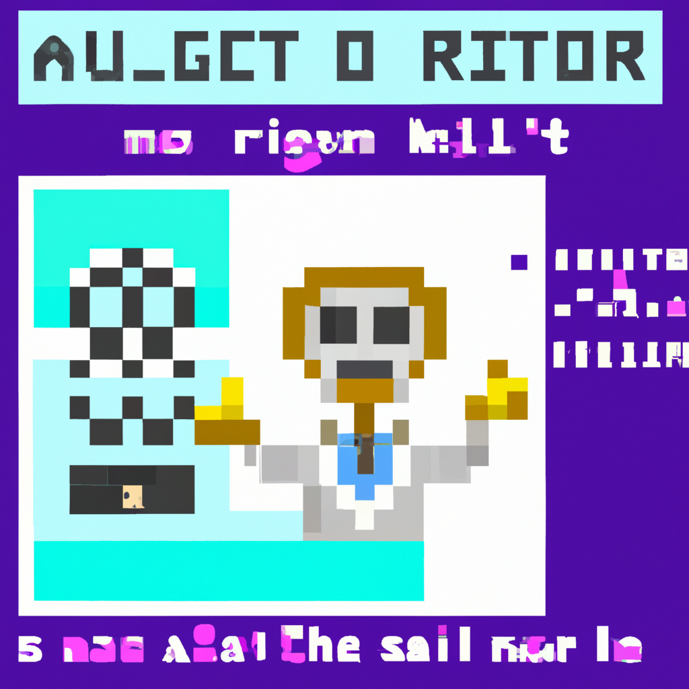

Why AI will never replace the radiologist
The idea that AI will one day replace the radiologist seems exciting and almost inevitable given the advances in machine learning. However, there are a few key reasons why AI will never replace the radiologist.
The first reason is that there is an inherent risk associated with relying solely on AI for medical diagnoses. AI algorithms are only as good as the data that is given to them. If the data is limited or incorrect, then the AI algorithm is likely to produce an incorrect diagnosis. As a result, any medical diagnosis made by AI should be double-checked by a trained and experienced radiologist.
The second